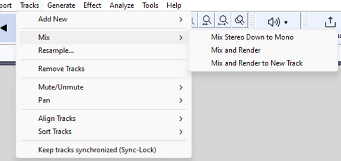

Tracks Menu: Mix
- 
Mix Stereo Down to Mono
Converts the selected stereo track(s) into the same number of mono tracks, combining left and right channels equally by averaging the volume of both channels. An important reason to convert stereo to mono is that it produces higher quality for the same bit rate (and hence file size) in lossy, compressed audio files like MP3 or AAC. Stereo Track to Mono is not available with stereo tracks split into left and right channels, or where the start or end positions of the channels are different.
If you have a split stereo track, you can use the Track Dropdown Menu to join the channels into a single stereo track before converting to mono. This menu also lets you convert a stereo track to a mono track containing only one of the channels:
- Choose "Split Stereo to Mono" from the Track Dropdown Menu if your stereo track is not already split into separate tracks
- Close the unwanted track using the button at the top left of the Track Control Panel.
Mix and Render
Your audio tracks are implicitly mixed whenever you click the Play button on Transport Toolbar or export audio. Mix and Render explicitly mixes down all selected tracks to a single mono or stereo track, rendering to the waveform all real-time transformations that had been applied (such as track gain, panning, amplitude envelopes or a change in project rate). The resulting track (called "Mix") replaces the selected tracks and is placed underneath any tracks that were not mixed and rendered.
Like all tracks, the "Mix" track can be renamed using the Audio Track Dropdown Menu.
| If you try to mix two very loud tracks together, you may get clipping (it will sound like pops, clicks and noise). To avoid this, use the track gain controls to reduce the amplitude of all of your tracks before mixdown. |
See Mixing Audio Tracks for more details.
Mix and Render to New Track Ctrl + Shift + M Extra
This command performs the same actions as Mix and Render above, except that the original tracks are preserved rather than being replaced by the "Mix" track.